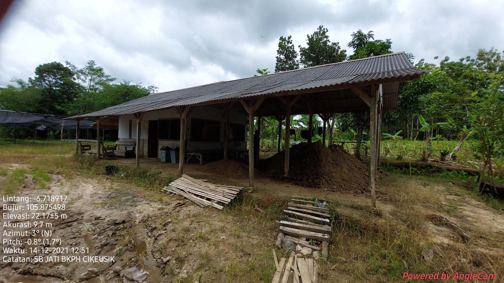
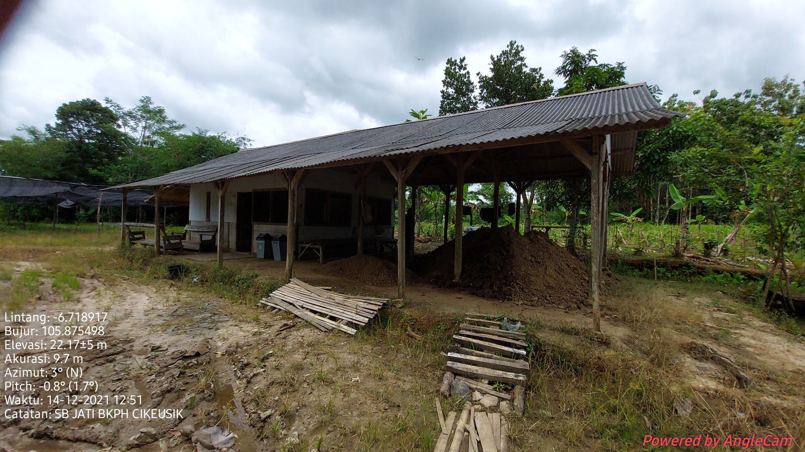
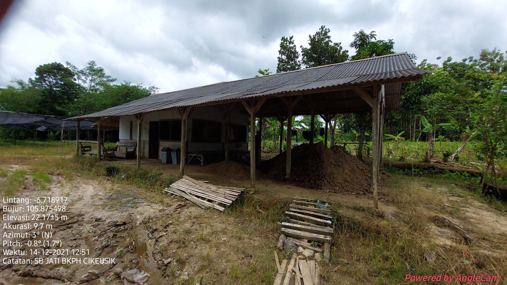

Nomor Sumber Benih
36.01.138
Nama Lokal
Jati
Nama Botani
Tectona grandi
Luas (Ha)
0,50
Kelas SB
KP
Bioregion
Jawa Madura
UPT
BPDASHL Citarum Ciliwung
Provinsi
Banten
Kabupaten
Pandeglang
Kecamatan
Cikeusik
Desa
Cikeusik
Garis Lintang
-6,43059
Garis Bujur
105,52288
Pemilik
Perum Perhutani Divre Jawa Barat (KPH Banten)
Alamat Pemilik
Jl. Letkol Yusuf Martadilaga No.9 Serang Provinsi Banten
Jenis Kepemilikan
BUMN
Nomor Sertifikat Sumber Benih
019/BPTH.1-3/558/2019
Tanggal Sertifikat Sumber Benih
05-Maret-2019
Masa berlaku Sertifikat Sumber Benih
05-Maret-2024
Jumlah Pohon
4,5
Musim Pembungaan
Sepanjang Tahun
Musim Buah Masak
Sepanjang Tahun
Estimasi Produksi Benih
486,000.00 Ortet
Estimasi Jumlah Benih
486 Ortet
Hasil Rata-Rata Pengunduhan/ Periode Panen
-
Pemanfaatan
Digunakan sendiri
